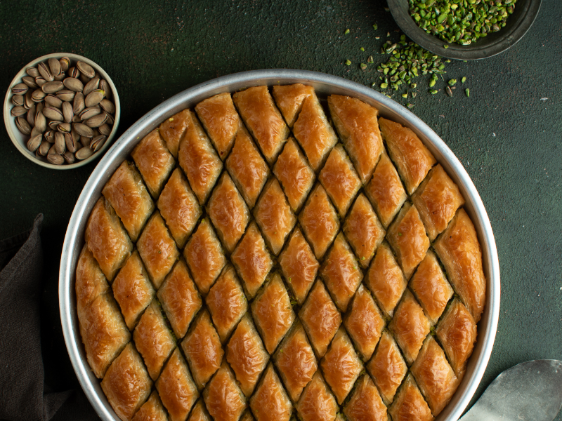
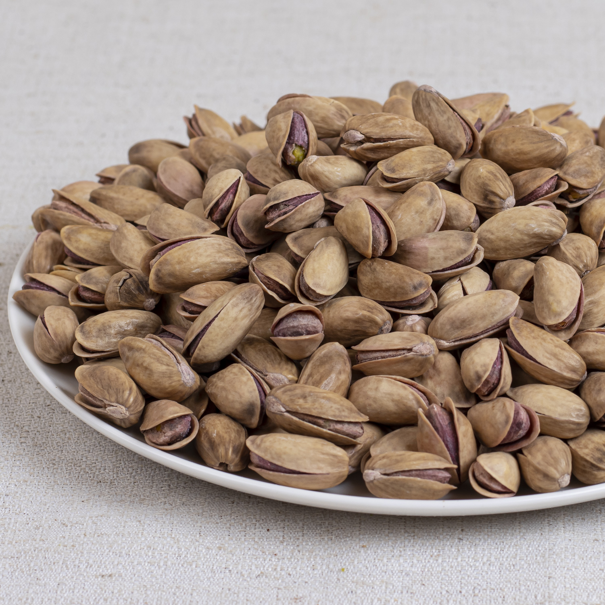
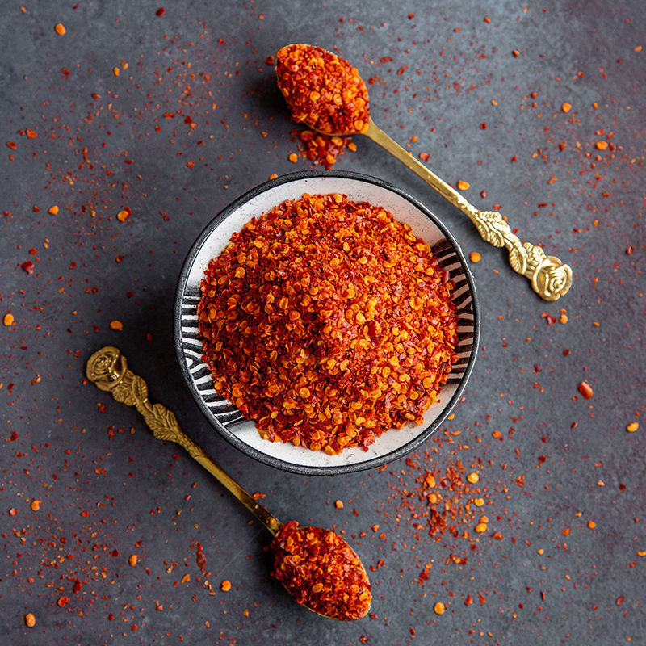

Gaziantep Yöresel Ürünleri

Gaziantep Baklavası(1kg)
İnce açılmış hamur katları, bol Antep fıstığı ve tereyağı ile hazırlanan geleneksel Gaziantep tatlısı.
₺1.500
Antep Fıstığı(500gr)
Gaziantep’in verimli topraklarında yetişen, yoğun aromalı ve doğal kuruyemiş ürünü.
₺1.200Menengiç Kahvesi(600gr)
Menengiç bitkisinden elde edilen, kendine özgü aromaya sahip geleneksel Gaziantep kahvesi.
₺600
Pul Biber(250gr)
Güneşte kurutulmuş özel kırmızı biberlerden hazırlanan, yemeklere güçlü aroma katan yöresel baharat.
₺360